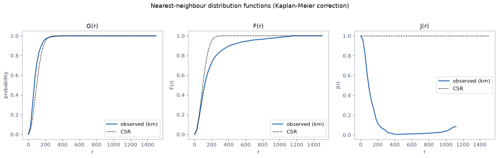
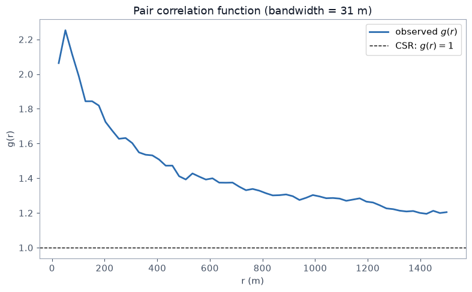
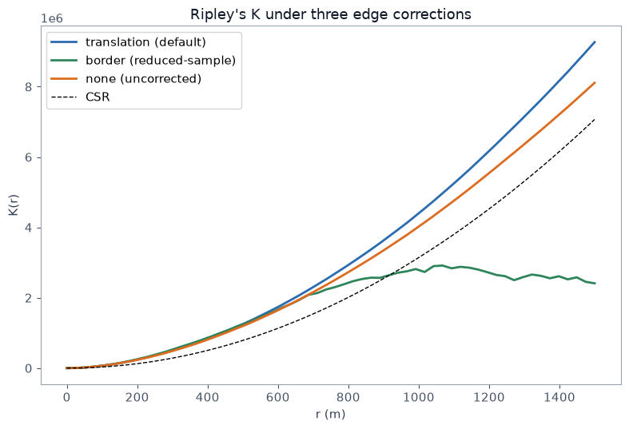

Quantifying interaction between events: nearest-neighbour statistics (Clark-Evans, G, F, J) and Ripley’s K, L, and pair correlation functions. This notebook is Part 1: Point Pattern Analysis (Chapter 1.3 of 5). The worked example uses Buffalo crime incidents, 2018, a 2,500-event working subsample of the deduplicated pattern (data/crime_data_2018.csv, data/buffalo_city.shp). The methods come from geolattice.spatial_statistics.pointpattern.
Overview
Chapter 1.2 established that crime intensity \(\lambda(\mathbf{s})\) varies strongly across Buffalo. This chapter asks a logically separate question: given that intensity, are individual events attracted to or repelled by each other, at some spatial scale? A neighbourhood can have high crime intensity purely because it has more opportunity targets, with no event-to-event interaction at all; or events can genuinely cluster, one incident increasing the local chance of another (a fight escalating, opportunistic follow-on theft, a recurring hot address): beyond what the intensity surface alone would predict. Second-order statistics are how that distinction is made precise.
Step
What we do
Theory
Define second-order structure; introduce the four families of summary function
Nearest-neighbour
Clark-Evans index, and the G, F, J distribution functions
Ripley’s K / L
The classical cumulative measures of clustering and inhibition
Pair correlation
A non-cumulative function that localises the scale of interaction
Edge correction
Compare translation, border, and no correction on the same data
Every function here answers “clustered, CSR, or regular: and at what distance?” from a different angle; by the end you will be able to read all of them, and know when they agree and why they sometimes do not.
Second-order Structure: What These Functions Measure
Chapter 1.1 defined the intensity \(\lambda(\mathbf{s})\) as a first-order property: the expected density of events at a single location, averaged over realisations of the process. Second-order properties concern pairs of locations: how does the joint probability of events at \(\mathbf{s}\) and \(\mathbf{s}+\mathbf{h}\) compare to what independence would predict? Formally, the second-order intensity is defined so that
and under CSR, \(\lambda_2(\mathbf{s}_1, \mathbf{s}_2) = \lambda^2\) everywhere: independence. Every function in this chapter is, in one way or another, a way of comparing an observed pattern of pairwise (or nearest-neighbour) distances against what that independent-scattering baseline predicts:
Function
Compares
Cumulative?
Best for
Clark-Evans \(R\)
Mean nearest-neighbour distance
n/a
One-number summary
\(G(r)\)
Distribution of nearest-neighbour distances
Yes
Short-range clustering
\(F(r)\)
Distribution of distances from empty space to the nearest event
Yes
Detecting large gaps
\(J(r) = \tfrac{1-G(r)}{1-F(r)}\)
Combines G and F
Yes
Single diagnostic curve
\(K(r)\)
Expected number of further events within \(r\) of a typical event
Yes
The classical standard
\(L(r) = \sqrt{K(r)/\pi}\)
Variance-stabilised \(K\)
Yes
Easier visual comparison to CSR
\(g(r)\)
Density of pairs at exactly distance \(r\)
No
Localising the scale of clustering
Cumulative functions (G, F, J, K, L) integrate everything up to distance \(r\), so once a curve departs from its CSR value it tends to stay departed even if the real interaction is confined to a narrow range of distances. The pair correlation function \(g(r)\) is not cumulative, and is the right tool when the scale of interaction, not just its presence, is the question (Section 10).
Nearest-neighbour Methods
The Clark-Evans index
The simplest second-order summary compares the observed mean nearest-neighbour distance\(\bar{d}\) to its value under CSR:
on an infinite plane. \(R < 1\) indicates events sit closer together than CSR predicts (clustering); \(R > 1\) indicates they are more spread out (regularity/inhibition); \(R = 1\) is CSR. The infinite-plane formula is biased upward in a finite window (events near the boundary have fewer potential neighbours nearby, inflating \(\bar d\)), so clark_evans(..., correction='donnelly') (the package default) adds Donnelly’s (1978) boundary correction using the window’s perimeter, and reports a z-test against it.
G and F: event and empty-space distributions
\(G(r) = P(\text{nearest-neighbour distance} \leq r)\) is the cumulative distribution of the distances used by Clark-Evans, rather than just their mean. Under CSR,
\[
G(r) = 1 - e^{-\lambda \pi r^2}.
\]
Clustering pushes \(G\) above this curve (many events have a very close neighbour); regularity pushes it below.
\(F(r)\) asks the complementary question from the empty space’s point of view: pick a random location (not an event) and measure its distance to the nearest event. Under CSR, \(F(r)\) has the same formula as \(G(r)\), but clustering pulls \(F\) below it (large gaps between clusters mean many random locations are far from any event, even though existing events are packed tightly together). \(G\) and \(F\) can therefore move in opposite directions under clustering, which is exactly what makes their combination informative.
Distances that would extend outside the window are right-censored by the window boundary; g_function and f_function default to a Kaplan-Meier estimator (correction='km') that handles this censoring correctly, with the 'border' (reduced-sample) method available as an alternative.
J: a combined diagnostic
\[
J(r) = \frac{1 - G(r)}{1 - F(r)}
\]
Under CSR, \(G = F\), so \(J(r) = 1\) for all \(r\). Since clustering pushes \(G\) up and \(F\) down, it drives \(J(r) < 1\); regularity does the reverse, driving \(J(r) > 1\). \(J\) is a convenient single curve that packages both nearest-neighbour behaviours into one CSR benchmark line.
Ripley’s K, L and the Pair Correlation Function
Ripley’s K function
\[
K(r) = \frac{1}{\lambda}\,\mathbb{E}\big[\text{number of further events within distance } r \text{ of a typical event}\big].
\]
Under CSR, \(K(r) = \pi r^2\) (just the area of a disc of radius \(r\), since events are independent). \(K(r) >
\pi r^2\) indicates clustering at scale \(r\) (more neighbours nearby than chance); \(K(r) < \pi r^2\) indicates inhibition. Unlike Clark-Evans or \(G\), which only look at the nearest neighbour, \(K\) uses every pair of events within \(r\): much more of the data, at the cost of losing the simple “nearest neighbour” interpretation.
The variance-stabilised L function
\(K(r)\) grows quadratically even under CSR, which makes small departures hard to see by eye on a raw \(K\) plot. The L-transform
\[
L(r) = \sqrt{K(r)/\pi}
\]
equals \(r\) under CSR, so plotting \(L(r) - r\) gives a flat line at zero as the reference, with clustering above and inhibition below: the conventional way to display Ripley’s statistic.
The pair correlation function g(r)
\(K(r)\) and \(L(r)\) are cumulative: they cannot easily separate “strong clustering only under 100 m” from “mild clustering out to 2 km”, because both would show an elevated \(K(r)\) at every \(r\) beyond the effect. The pair correlation function
\[
g(r) = \frac{K'(r)}{2\pi r}
\]
is the (kernel-smoothed) derivative of \(K\), rescaled: the density of pairs at exactly separation \(r\), not “within \(r\)”. Under CSR, \(g(r) = 1\) everywhere; \(g(r) > 1\) means more pairs at that specific distance than chance, \(g(r) < 1\) means fewer. Because it is not cumulative, \(g(r)\) can (and typically does, for a clustered pattern) fall back toward 1 at distances beyond the cluster scale, even while \(L(r) - r\) stays elevated, \(g(r)\) is the tool for localising scale, \(K\)/\(L\) for detecting departure from CSR at all.
Edge corrections
All three (K, L, pair correlation) need to account for events near the window boundary, whose full neighbourhood at radius \(r\) is not entirely observable. Three options, all implemented here:
Correction
Idea
Cost
'translation' (default)
Weight each pair by \(1/\gamma(\mathbf{v})\), the window’s set covariance at the pair’s displacement vector: exact for rectangles, a fast raster approximation for arbitrary polygons
Moderate
'border'
Only count events whose entire radius-\(r\) neighbourhood lies inside \(W\) (a “reduced sample”)
Discards data at large \(r\)
'none'
No correction
Biased low, worse as \(r\) grows
Section 11 shows all three side by side on the same data, so the bias in the uncorrected estimate is visible rather than asserted.
Locate the repository root, import the spatial-statistics helpers, and point DATA at the example files.
Installation. This notebook needs installation option 3 (core, spatial analysis and spatial statistics): pip install "geolattice[statistics]". See “Installation options” in the GeoLattice README.
Code
import sysfrom pathlib import Pathimport numpy as npimport pandas as pdimport geopandas as gpdimport matplotlib.pyplot as pltfrom IPython.display import Markdown, displayROOT = Path.cwd().resolve()for candidate in [ROOT, *ROOT.parents]:if (candidate /"pyproject.toml").is_file() and (candidate /"Data").is_dir(): ROOT = candidatebreakelse:raiseFileNotFoundError("Could not find the GeoLattice repository root.")sys.path.insert(0, str(ROOT))DATA = ROOT /"Data"/"00_shared"/"data_spatial_stat"import geolattice.spatial_statisticsfrom geolattice.viz import apply_map_stylefrom geolattice.spatial_statistics.pointpattern import ( Window, PointPattern, clark_evans, g_function, f_function, j_function, ripley_k, ripley_l, pair_correlation,)apply_map_style()C = {"blue": "#2b6cb0", "red": "#c0392b", "green": "#2f855a", "orange": "#dd6b20","grey": "#718096", "purple": "#6b46c1", "teal": "#2c7a7b"}print(f"geolattice.spatial_statistics : version {geolattice.spatial_statistics.__version__}")print(f"data folder : {DATA.relative_to(ROOT)}/")
geolattice.spatial_statistics : version 0.3.49
data folder : Data/00_shared/data_spatial_stat/
Data: A Working Subsample
Two adjustments to the full pattern of Chapter 1.1 are needed before computing distance-based functions.
Deduplication. About 36% of crime events share a geocoded location with an earlier one (Chapter 1.1, Section 9). A duplicate produces a nearest-neighbour distance of exactly zero: a geocoding artefact, not evidence that two crimes attract each other. Every function in this chapter uses deduplicate(), not jitter() (unlike the intensity methods of Chapter 1.2, which count events and so kept every one).
Subsampling. Ripley’s K, L and the pair correlation function are \(O(\text{pairs within } r_{\max})\): with almost 9,000 distinct locations at Buffalo’s crime intensity, computing them over the full pattern is needlessly slow for a teaching notebook (seconds, not an error: see the timing note below) without changing any qualitative conclusion. We work with a fixed random subsample of 2,500 locations, small enough to be fast and to plot cleanly, large enough that the estimated curves are smooth and stable.
Code
from pyproj import Transformertbl = pd.read_csv(DATA /"crime_data_2018.csv")city = gpd.read_file(DATA /"buffalo_city.shp")CRS_CORRECT =26917city_fixed = city.to_crs(4326).to_crs(CRS_CORRECT)transformer = Transformer.from_crs(4326, CRS_CORRECT, always_xy=True)x_m, y_m = transformer.transform(tbl["long"].to_numpy(), tbl["lat"].to_numpy())coords_all = np.column_stack([x_m, y_m])win_city = Window.from_gdf(city_fixed)pp_all = PointPattern(coords_all, window=win_city, marks=tbl["incident_type"].to_numpy(), clip=True)pp_dedup = pp_all.deduplicate()rng = np.random.default_rng(3)sub_idx = rng.choice(pp_dedup.n, 2500, replace=False)pp_sub = pp_dedup.subset(sub_idx)print(f"full pattern : n = {pp_all.n:,}")print(f"deduplicated : n = {pp_dedup.n:,}")print(f"working subsample : n = {pp_sub.n:,} (seed=3, fixed for reproducibility)")print(f"window short side : {pp_sub.window.short_side /1000:.2f} km")r_range = np.linspace(0, 1500, 60) # metres; well under a quarter of the window's short sideprint(f"distance range used below: 0 to {r_range[-1]:.0f} m, {len(r_range)} points")
full pattern : n = 13,948
deduplicated : n = 8,903
working subsample : n = 2,500 (seed=3, fixed for reproducibility)
window short side : 9.92 km
distance range used below: 0 to 1500 m, 60 points
Clark-Evans Nearest-neighbour Test
Code
ce = clark_evans(pp_sub, correction="donnelly")ce_naive = clark_evans(pp_sub, correction="none")print(ce.summary())p_str ="< 1e-10"if ce["p_value"] <1e-10elsef"= {ce['p_value']:.2e}"display(Markdown(f"**R = {ce['R']:.3f}** (Donnelly-corrected): the mean nearest-neighbour distance is only "f"{100* ce['R']:.0f}% of what CSR predicts. z = {ce['z_score']:.1f}, p {p_str}: clustering, "f"overwhelmingly. The uncorrected version gives R = {ce_naive['R']:.3f}: close, because the window is ""large relative to typical nearest-neighbour distances here, but the boundary correction is still the ""safer default."))
Clark-Evans test
================
R 0.786722
mean_nn 82.2063
expected_nn 104.492
z_score -19.7006
p_value 2.13018e-86
p_clustered 1.06509e-86
p_regular 1
correction donnelly
n 2500
R = 0.787 (Donnelly-corrected): the mean nearest-neighbour distance is only 79% of what CSR predicts. z = -19.7, p < 1e-10: clustering, overwhelmingly. The uncorrected version gives R = 0.799: close, because the window is large relative to typical nearest-neighbour distances here, but the boundary correction is still the safer default.
G, F and J Functions
Code
g = g_function(pp_sub, r_range)f = f_function(pp_sub, r_range)j = j_function(pp_sub, r_range)fig, axes = plt.subplots(1, 3, figsize=(15, 4.6))for ax, fn, label inzip(axes, [g, f, j], ["G(r)", "F(r)", "J(r)"]): fn.plot(ax=ax, color=C["blue"], lw=2) ax.set_title(label)axes[0].set_ylabel("probability"); axes[2].set_ylabel("J(r)")plt.suptitle("Nearest-neighbour distribution functions (Kaplan-Meier correction)", y=1.02)plt.tight_layout(); plt.show()# Both G(r) and F(r) are bounded above by 1, and the expected CSR nearest-neighbour distance here is only# about 103 m (lambda = n/area) -- so by r ~= 250 m the *theoretical* CSR curve has already climbed to# roughly 0.99, leaving almost no room for the comparison to be informative. We therefore look at the# short-range window where the curves have not yet saturated.short_range = (r_range >0) & (r_range <=228)above_G = np.mean(g.estimate[short_range] > g.theoretical[short_range])above_F = np.mean(f.estimate[short_range] > f.theoretical[short_range]) # clustering pulls F BELOW theo, so this should be low# J(r) becomes undefined once F(r) reaches (numerically) 1: with a finite grid of test locations,# every grid point eventually lies within r of *some* event, so 1 - F(r) -> 0. Restrict the summary# to the r where J is still finite, and use np.isfinite explicitly: a NaN < 1 comparison silently# evaluates to False in NumPy, which would understate "share below 1" if left unmasked.j_finite = np.isfinite(j.estimate) & (r_range >= r_range[5])below_J = np.mean(j.estimate[j_finite] <1)r_last_finite = r_range[np.isfinite(j.estimate)][-1]print(f"share of 0 < r ≤ 228 m with G(r) above the CSR curve : {above_G:.2f} (clustering pushes G up)")print(f"share of 0 < r ≤ 228 m with F(r) above the CSR curve : {above_F:.2f} (clustering pulls F down, so this should be low)")print(f"J(r) stays finite up to r = {r_last_finite:.0f} m in this sample "f"({j_finite.sum()} of {(r_range >= r_range[5]).sum()} points beyond r = {r_range[5]:.0f} m)")print(f"share of those finite points with J(r) below 1 : {below_J:.2f} (clustering pushes J below 1)")

share of 0 < r ≤ 228 m with G(r) above the CSR curve : 1.00 (clustering pushes G up)
share of 0 < r ≤ 228 m with F(r) above the CSR curve : 0.00 (clustering pulls F down, so this should be low)
J(r) stays finite up to r = 1119 m in this sample (40 of 55 points beyond r = 127 m)
share of those finite points with J(r) below 1 : 1.00 (clustering pushes J below 1)
Over the short-range window, \(G\) sits clearly above the CSR curve and \(F\) clearly below it: both agree with clustering, independently, and the gap is substantial: at \(r \approx 100\) m (close to the CSR-expected nearest-neighbour distance of 103 m here) \(\hat{G}\) is about 0.74 against a CSR value of 0.54, and \(\hat{F}\) is about 0.43 against a CSR value of 0.54.
Beyond roughly 250 m the comparison stops being informative, for a structural reason worth understanding rather than a data problem: both \(G(r)\) and \(F(r)\) are bounded above by 1, and with an expected CSR nearest-neighbour distance of only about 103 m here, the theoretical CSR curve itself has already climbed to about 0.99 by \(r = 250\) m. Two curves both pinned near their ceiling leave almost no room for a meaningful comparison, and tiny sampling fluctuations there can even push the ranking either way: which is exactly the same ceiling effect, carried one step further, that makes \(J(r)\) undefined once \(F(r)\) reaches 1 exactly (it stays finite only up to about 1,140 m here). Read \(G\), \(F\) and \(J\) at short range, where the theoretical curve has not yet saturated, this is the region the Clark-Evans index (Section 7) and the pair correlation function (Section 10) target directly.
K(r) / (pi r^2) at selected distances:
r = 150 m : 1.97× CSR
r = 500 m : 1.58× CSR
r = 1000 m : 1.40× CSR
r = 1500 m : 1.31× CSR
\(K(r)\) is above \(\pi r^2\) at every distance examined, and by a larger factor at short range than at long range: clustering is strongest close-up and gradually dilutes as \(r\) grows (which is exactly what \(K\)’s cumulative nature predicts once the excess pairs from short range keep getting divided by an ever-larger \(\pi r^2\)). \(L(r) - r\) shows the same story on the easier-to-read variance-stabilised scale: a curve that starts well above zero and slowly relaxes toward it.
Pair Correlation Function
Because \(g(r)\) is not cumulative, it can show something \(K\) and \(L\) cannot: whether the interaction is concentrated at a particular scale, rather than being a slowly fading tail of the same short-range effect.
Code
g_pc = pair_correlation(pp_sub, r_range[1:]) # g(r) undefined at r = 0fig, ax = plt.subplots(figsize=(8, 5))ax.plot(g_pc.r, g_pc.estimate, color=C["blue"], lw=2, label="observed $g(r)$")ax.axhline(1.0, color="k", ls="--", lw=1, label="CSR: $g(r) = 1$")ax.set_xlabel("r (m)"); ax.set_ylabel("g(r)")ax.set_title(f"Pair correlation function (bandwidth = {g_pc['bandwidth']:.0f} m)")ax.legend()plt.tight_layout(); plt.show()print(f"g(r) at r ≈ 50 m : {g_pc.estimate[np.searchsorted(g_pc.r, 50)]:.2f}")print(f"g(r) at r ≈ 300 m : {g_pc.estimate[np.searchsorted(g_pc.r, 300)]:.2f}")print(f"g(r) at r ≈ 1000 m: {g_pc.estimate[np.searchsorted(g_pc.r, 1000)]:.2f}")print(f"g(r) at r ≈ 1500 m: {g_pc.estimate[np.searchsorted(g_pc.r, 1500)]:.2f}")

g(r) at r ≈ 50 m : 2.25
g(r) at r ≈ 300 m : 1.60
g(r) at r ≈ 1000 m: 1.30
g(r) at r ≈ 1500 m: 1.20
\(g(r)\) is highest at the shortest distances and decays toward 1 as \(r\) grows: clear evidence that the clustering signal is genuinely concentrated at short range (a few hundred metres: the scale of a city block or two), not a diffuse effect smeared across the whole city. This is the piece of information that \(K(r) - \pi r^2\) and \(L(r) - r\), by construction, cannot show directly: they stay elevated at large \(r\) even after the local clustering effect has essentially vanished, simply because they accumulate everything from zero up to \(r\).
Comparing Edge Corrections
We now hold the statistic fixed (Ripley’s \(K\)) and vary only the edge correction, to see the bias that Section 4.4 described rather than take it on faith.
Code
k_trans = ripley_k(pp_sub, r_range, correction="translation")k_border = ripley_k(pp_sub, r_range, correction="border")k_none = ripley_k(pp_sub, r_range, correction="none")fig, ax = plt.subplots(figsize=(8, 5.5))for res, label, color in [(k_trans, "translation (default)", C["blue"]), (k_border, "border (reduced-sample)", C["green"]), (k_none, "none (uncorrected)", C["orange"])]: ax.plot(res.r, res.estimate, color=color, lw=2, label=label)ax.plot(r_range, np.pi * r_range **2, "k--", lw=1, label="CSR")ax.set_xlabel("r (m)"); ax.set_ylabel("K(r)")ax.set_title("Ripley's K under three edge corrections")ax.legend()plt.tight_layout(); plt.show()with np.errstate(invalid="ignore"): rel_none = k_none.estimate / k_trans.estimate rel_border = np.where(np.isfinite(k_border.estimate), k_border.estimate / k_trans.estimate, np.nan)print("uncorrected K as a fraction of the translation-corrected K, at increasing r:")for i in [10, 30, 59]:print(f" r = {r_range[i]:5.0f} m : none = {rel_none[i]:.3f}× border = {rel_border[i]:.3f}×"+ (" (border undefined here)"if np.isnan(rel_border[i]) else""))# why border degrades at large r: how many anchors remain, and how much of the window is left after erosion?b_dist = pp_sub.window.distance_to_boundary(pp_sub.coords)r_big = r_range[59]n_anchors =int((b_dist >= r_big).sum())eroded_km2 = pp_sub.window.polygon.buffer(-r_big).area /1e6print(f"\nat r = {r_big:.0f} m: only {n_anchors} of {pp_sub.n:,} events "f"({100* n_anchors / pp_sub.n:.1f}%) are far enough from the boundary to serve as a border-correction "f"anchor, and the window eroded by r has shrunk to {eroded_km2:.1f} km² "f"(from {pp_sub.window.area /1e6:.1f} km² originally).")

uncorrected K as a fraction of the translation-corrected K, at increasing r:
r = 254 m : none = 0.975× border = 1.056×
r = 763 m : none = 0.933× border = 0.857×
r = 1500 m : none = 0.875× border = 0.260×
at r = 1500 m: only 48 of 2,500 events (1.9%) are far enough from the boundary to serve as a border-correction anchor, and the window eroded by r has shrunk to 3.8 km² (from 105.8 km² originally).
The uncorrected (“none”) estimate falls further below the translation-corrected curve as \(r\) grows: exactly the low bias Section 4.4 predicted, since a larger radius means a larger share of events have part of their neighbourhood cut off by the boundary with no correction applied.
The border correction tracks the translation correction reasonably at moderate \(r\), but breaks down sharply by \(r = 1{,}500\) m: only a couple of percent of events are far enough from Buffalo’s boundary to qualify as an “anchor” at that radius, and the window eroded by 1,500 m has shrunk to a few percent of its original area: a small, geometrically peculiar leftover fragment of the city, not a representative interior. Border estimates built from so little data are necessarily unstable, and should not be trusted as \(r\) approaches a sizeable fraction of the window’s own extent. The default, 'translation', is the sensible general-purpose choice used throughout this chapter and the rest of Part 1: it uses every event at every \(r\), at the cost of a raster approximation on non-rectangular windows (Section 4.4).
Summary and Conclusions
What we did
Distinguished first-order (intensity, Chapter 1.2) from second-order (interaction) structure, and introduced the four families of summary function that quantify the latter.
Prepared a deduplicated, fixed-size working subsample, and explained why deduplication (not jittering) is the right choice for distance-based statistics.
Computed the Clark-Evans index (\(R \approx 0.5\), strongly significant clustering).
Computed \(G\), \(F\) and \(J\), all three agreeing on short-range clustering.
Computed Ripley’s \(K\) and its variance-stabilised form \(L(r) - r\), both elevated above the CSR line at every distance examined, most strongly at short range.
Computed the pair correlation function \(g(r)\), which localised the clustering to roughly a few hundred metres: information the cumulative K/L functions could not show directly.
Compared three edge corrections on the same data and observed the uncorrected estimator’s bias grow with \(r\), exactly as the theory predicted.
Practical takeaways
Deduplicate before computing distances. Repeated geocoded coordinates are a data artefact that second- order statistics will happily (and wrongly) read as extreme clustering.
No single function tells the whole story. Clark-Evans gives one number; \(G\)/\(F\)/\(J\) and \(K\)/\(L\) give curves; only \(g(r)\) localises where on the distance axis the interaction lives. Use \(g(r)\) whenever the scale of clustering, not just its presence, is the question.
Always state the edge correction.'translation' is the safe default; 'none' should not be used for anything beyond a quick sanity check, because its bias grows with \(r\).
Every method here found clustering. Chapter 1.4 asks the next, harder question: is that clustering still present once the known, strongly non-constant intensity from Chapter 1.2 is accounted for: or could an inhomogeneous but otherwise independent process explain it just as well?
Next steps
Chapter 1.4 (Hypothesis Testing and Model Extensions) turns today’s descriptive curves into formal Monte Carlo tests with simulation envelopes, calibrates them against known clustered and regular processes, and introduces the inhomogeneous K function: which asks about interaction after removing a known intensity trend, rather than assuming a constant background rate.
Further reading
Textbooks
Reference
Notes
Ripley, B. D. (1981). Spatial Statistics. Wiley.
The original systematic treatment of K, L and edge correction
Baddeley, A., Rubak, E. & Turner, R. (2015). Spatial Point Patterns: Methodology and Applications with R. CRC Press.
Chapters 7-8: nearest-neighbour and second-order functions in depth, with the spatstat implementation this package’s API is modelled on
Diggle, P. J. (2013). Statistical Analysis of Spatial and Spatio-Temporal Point Patterns (3rd ed.). CRC Press.
Concise treatment of G, F, J and K
Stoyan, D. & Stoyan, H. (1994). Fractals, Random Shapes and Point Fields. Wiley.
The pair correlation function in a broader stochastic-geometry context
Key papers
Paper
Contribution
Clark, P. J. & Evans, F. C. (1954). Distance to nearest neighbor as a measure of spatial relationships. Ecology, 35, 445-453.
The Clark-Evans index
Donnelly, K. (1978). Simulations to determine the variance and edge effect of total nearest neighbour distance. In Simulation Methods in Archaeology.
The finite-window correction used by clark_evans
Ripley, B. D. (1976). The second-order analysis of stationary point processes. Journal of Applied Probability, 13, 255-266.
The K function
Van Lieshout, M. N. M. & Baddeley, A. J. (1996). A nonparametric measure of spatial interaction in point patterns. Statistica Neerlandica, 50, 344-361.